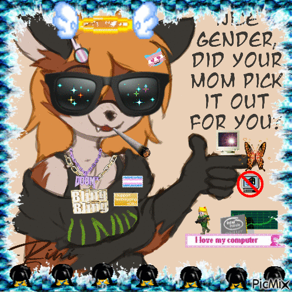
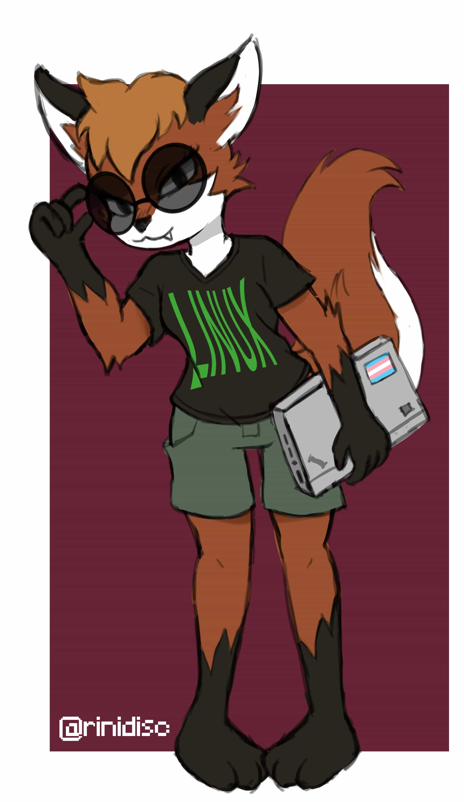
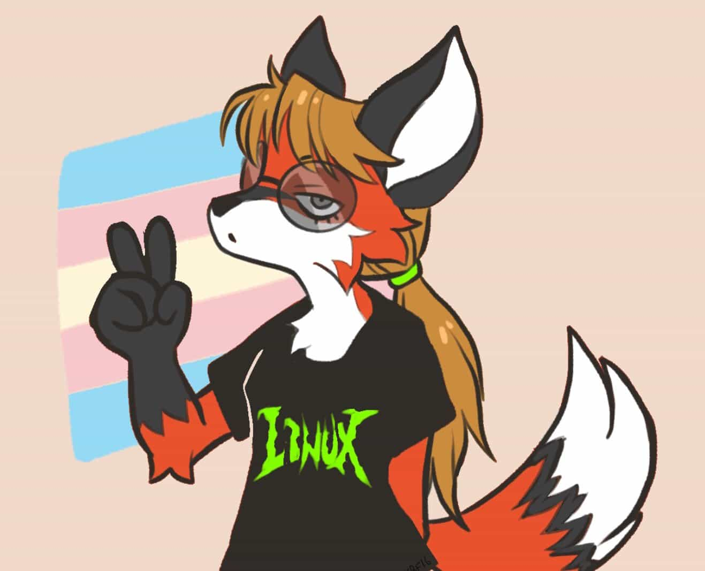
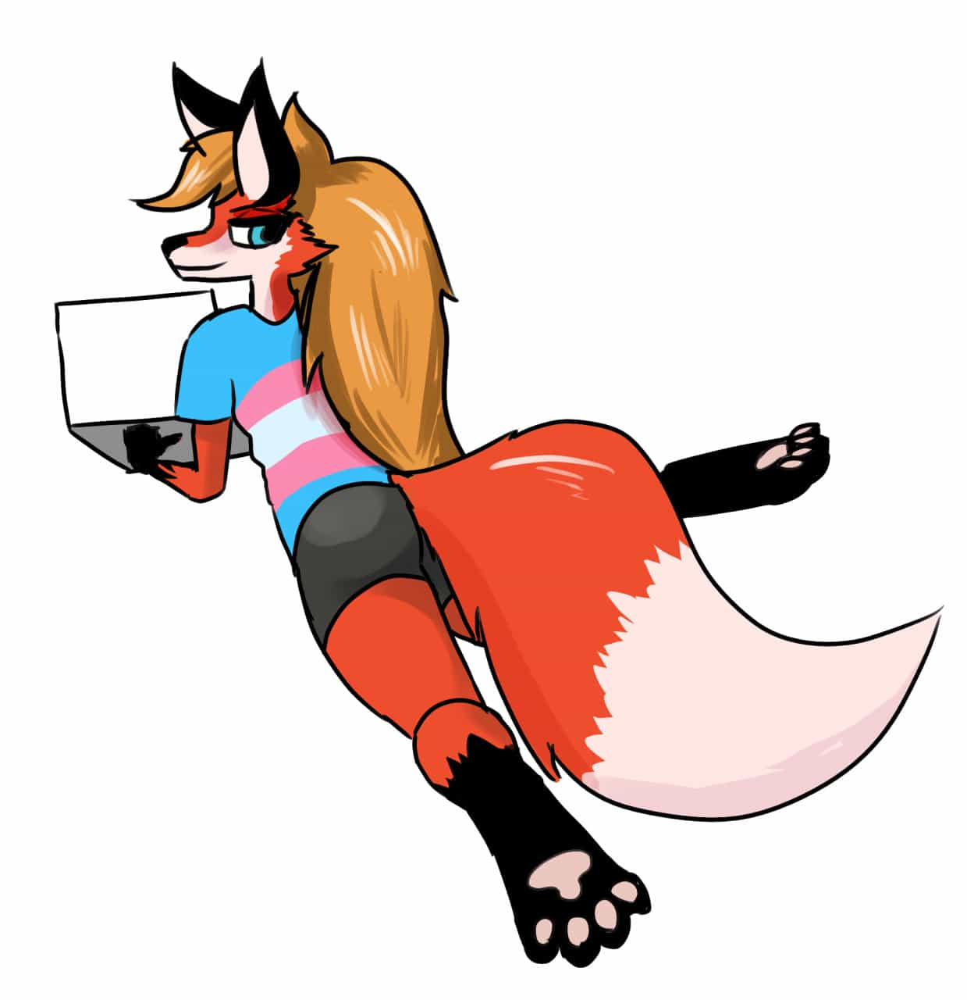
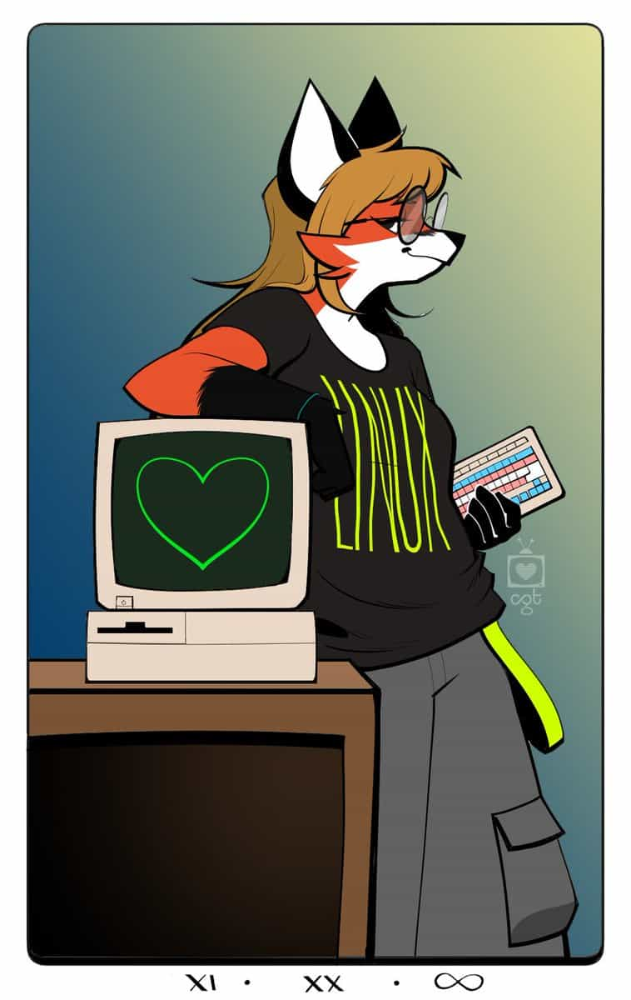
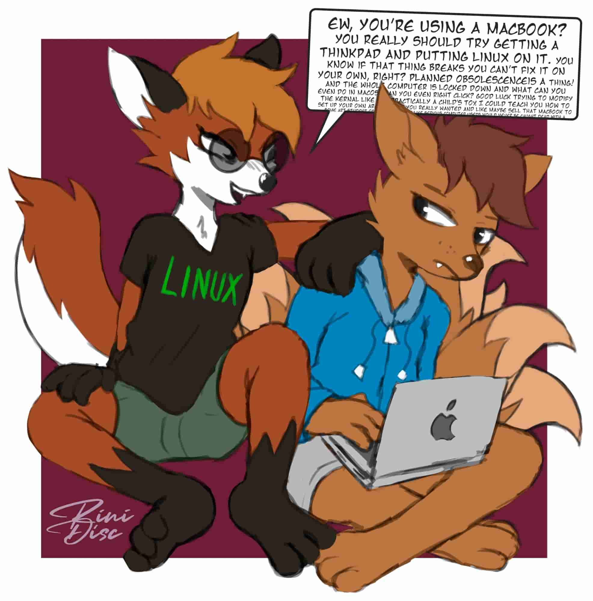
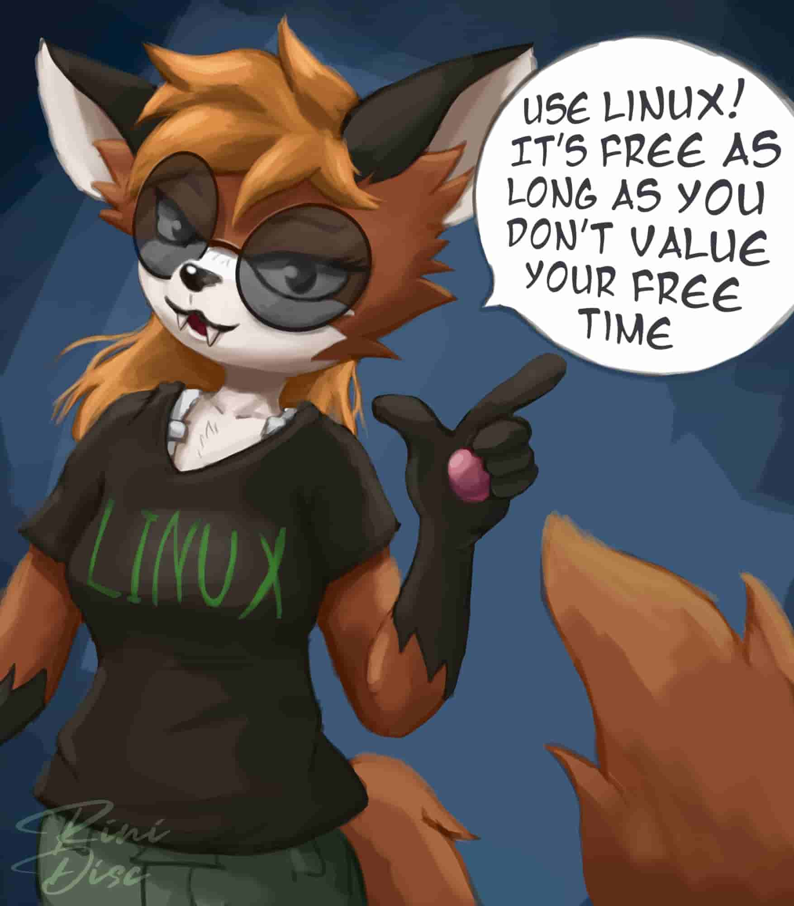

(Art by RiniDisc)
(Play the audio for this page! web browsers wont let me do it automatically.)
Xenia is an anthropromorpic fox character created by Alan Mackey in 1996 as a potential mascot for the Linux operating system. although this character was not chosen in favor of Tux, Linux's Official Penguin Mascot. People are still generally interested in this character, and Xenia serves as an unofficial mascot for some Linux Enthusiasts!
Xenia was originally supposed to be a boy, but when Xenia was rediscovered decades later, it was assumed she was a girl! when the news came out that Xenia was actually intended to be a boy, the community decided to make the chracter a trans girl. this is why you see a lot of trans pride Xenia artwork.




(Click on the images to view their sources!)
Of course she does, and she'll tell you all about it!

(Art by RiniDisc)
Uhmmm?? she uses FIREFOX you IDIOT!!! What else would she use??
(Art by RiniDisc)

(Art by RiniDisc)
1. It is not Windows (this is a good thing).
2. Linux runs on anything! from Computers, to Phones, and even gaming consoles like the Nintendo Wii!
3. It's open sourced and free.
4. You'll learn a lot about computers along the way.
5. It's secure and reliable.
6. It's easy to install and get into depending on the distro you choose.